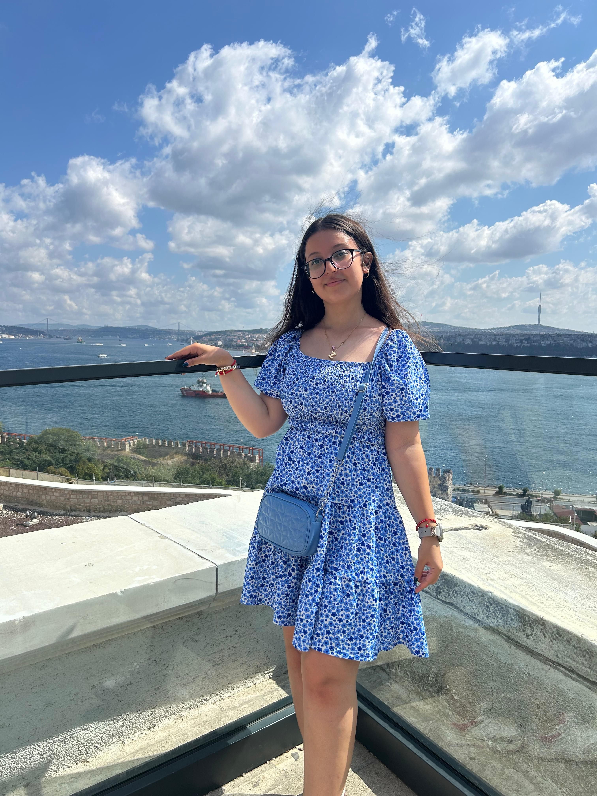

She is a 10th grade student of Baku Turkish Anatolian High School. She has been interested in coding for about 4 years. In 2021, she participated in the SAF and FLL competition for block-based coding in both competitions. Outside of school, she participated in the international STEM Olympiad and spent some time training in Python. Towards the end of 2023, she rejoined the SAF. In the mentioned competitions, she achieved remarkable achievements.

Deniz Irem Erdogan
She a 9th grader at Baku Turkish Anatolian High School. She participated in SAF 2022 and SAF2023. She has experiences in marketing and coding.
Zehra Aydın
She is currently studying in the 10th grade at Baku Turkish Anatolian High School. She started coding in 7th grade through a STEAM course offered by her school. She also participated in Teknofest 2022 and reached the semi-finals. She gained valuable knowledge and success in these competitions, which led to a deepening of her interest in technology.